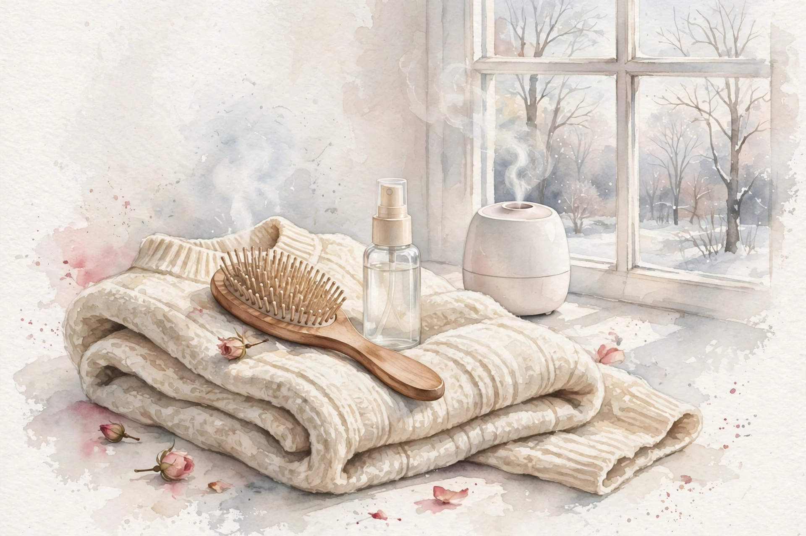

トップ ＞ ヘアケア ＞ 静電気が気になる季節のヘアケアの工夫
静電気が気になる季節のヘアケアの工夫

空気の乾燥する季節になると、ブラシを通すたびに髪がまとわりついたり、帽子を脱いだときに髪が広がったりします。施術の現場でも、冬場はこの話題が増えます。この記事では、特別なアイテムの話ではなく、毎日の手順の中でできる工夫を整理します。
仕上げは、乾かし過ぎを避ける
ドライヤーは、根元から毛先へ、完全に乾かし切る手前で止めるのが一つの目安です。髪を触って、毛先にほんの少ししっとり感が残る程度で止め、最後に冷風を当てて落ち着かせます。乾かす順番や当て方は、このサイトのドライヤーの記事でも紹介しています。
アウトバスアイテムを使う場合は、乾かす前のタイミングにそろえると、手順が安定します。量は少なめから始め、足りなければ足す調整が基本です。
ブラシと衣類の素材の組み合わせ
ブラシの素材によって、髪への当たり方は変わります。木製や天然毛のブラシは、プラスチック製とは違う手触りで、静電気の気になる季節に好んで使う方もいます。買い替えるときは、素材と目の粗さを見比べる観点を持っておくと選びやすくなります。
衣類との組み合わせも無視できません。マフラーや帽子、セーターの脱ぎ着の場面で髪がこすれるため、着替えの順番を工夫する（先に髪をまとめてから脱ぐ等）だけでも、広がり方は変わります。
朝の直しは、湿らせる量を控えめに
朝、髪が広がっているときは、手のひらにほんの少しの水分を広げて、表面をなでる程度から始めます。霧吹きで全体を湿らせるより、量を絞った方が、乾くまでの時間も短く、仕上がりが読みやすくなります。
静電気の工夫は、乾かし方、道具と衣類、朝の直し。この3か所の小さな調整の積み重ねです。
過ごし方の面では、髪をまとめる工夫も有効です。静電気が気になる日は、下ろした髪が衣類とこすれる面積が増えます。三つ編みやまとめ髪にする、毛先だけを内側に入れる、といった形の工夫で、こすれる場面を減らせます。外出先で気になったときは、水道で手のひらを少し湿らせて表面をなでるだけでも、その場の直しになります。部屋の空気が乾燥しやすい季節は、洗濯物の部屋干しなどで室内の湿度の感じ方が変わることもあります。髪の状態は、その日の環境とセットで見るもの。工夫の引き出しをいくつか持っておくと、季節の困りごとは小さくなります。静電気が気になる季節は、髪だけでなく、衣類の脱ぎ着やドアノブなど、生活のあちこちで同じ現象が起きます。髪の工夫だけを特別扱いせず、季節の過ごし方全体の中で位置づけると、無理のない対策の組み合わせが見えてきます。
セラフィナ「乾かし過ぎない仕上げと、素材の組み合わせ。朝は手のひらの水分で表面だけ直そう」